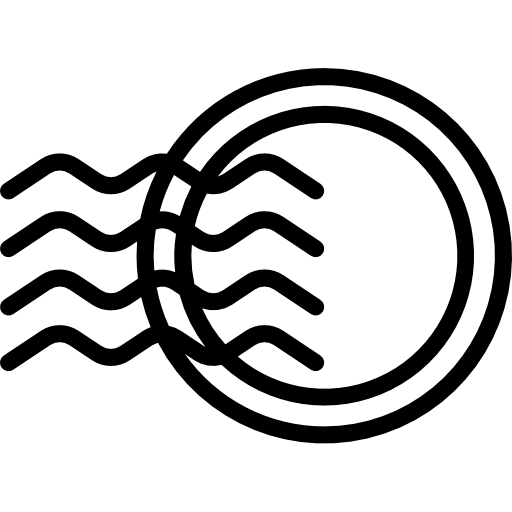
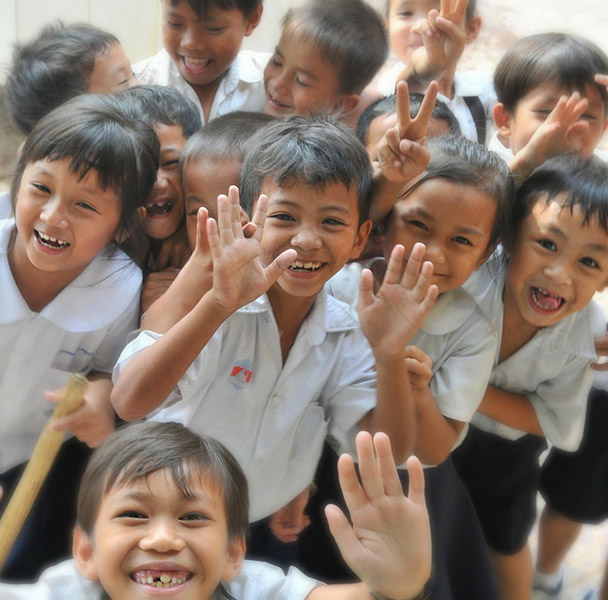
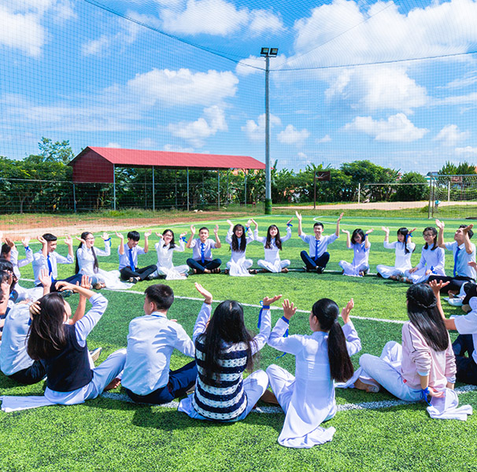
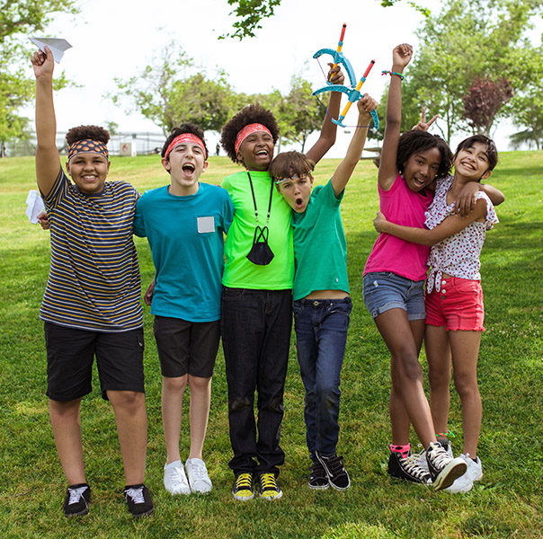
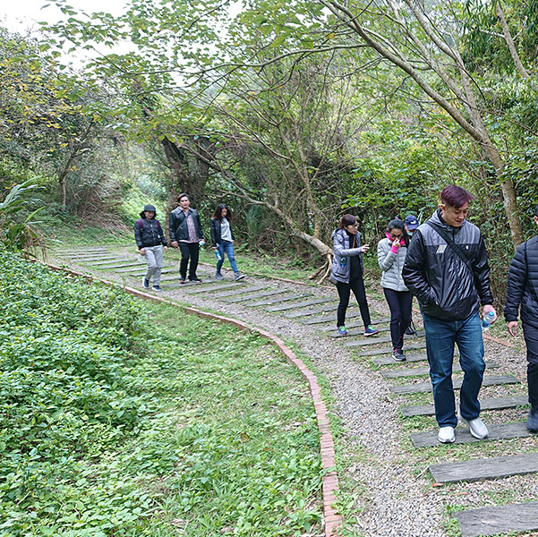

最新
活動
客製旅遊
打造與眾不同旅行體驗，歡迎各級學校及公司行號洽詢
-
企業親子日
想要辦一場與眾不同的旅行嗎?
台北走走是您辦活動的好夥伴! -
校外教學
我們有豐富的在地文化導覽經驗，
能帶領學生進行古蹟文化體驗! -
員工旅遊
想要辦一場與眾不同的旅行嗎?
台北走走是您辦活動的好夥伴!
 客製旅遊諮詢
客製旅遊諮詢

我們的客戶
-

平平國小周老師
台北走走是我見過最專業的導覽團隊，不論在知識方面或團體的氣氛都掌握得很好。讓我與20個孩子享受了一個美好的午後!
-

安安保險林經理
疫情之下無法出國，不如來場國內小旅遊，放鬆之餘，也凝聚團隊向心力!
台北走走~讚!
安安銷售團隊~讚~
-

美國學校張老師
帶著學生漫步在台北街頭，從不一樣的角度探索這座城市!結合戶外活動與導覽，外國學生也能感受城市的美好!
-

福福青年陳社長
第一屆福福青年「期初成長營」順利結束!感謝台北走走團隊在規劃期間密切討論，最後成就了如此成功的活動!
我們的故事

旅途的開始:2014年春天
2014年的春天，4個大學生在課堂上相識，開始了分組報告的旅程。 他們遇到了熱血沸騰的學運，把課堂報告改成了導覽台北的民主遺跡。 報告獲得了老師與同學的巨大迴響，他們思考著自己還可以多做些甚麼?
路上的風景:2015年
他們決定延畢一年，把想法化作實際行動，思考創業的可能，一邊參與 社區活動。4人團隊變成8人，大家一起為了「台北走走」而努力。
旅途的開始:2014年春天
2014年的春天，4個大學生在課堂上相識，開始了分組報告的旅程。 他們遇到了熱血沸騰的學運，把課堂報告改成了導覽台北的民主遺跡。 報告獲得了老師與同學的巨大迴響，他們思考著自己還可以多做些甚麼?
路上的風景:2015年
他們決定延畢一年，把想法化作實際行動，思考創業的可能，一邊參與 社區活動。4人團隊變成8人，大家一起為了「台北走走」而努力。